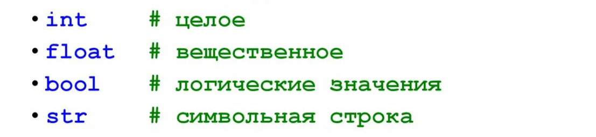

Руководство по языку
программирования Python
Python представляет популярный высокоуровневый язык
программирования, который предназначен для создания
приложений различных типов. Это и веб-приложения, и игры,
и настольные программы, и работа с базами данных. Довольно
большое распространение питон получил в области машинного
обучения и исследований искусственного интеллекта.

Python - один из самых популярных языков программирования на сегодняшний день, известный своей простотой и обширными возможностями. Его чистый и понятный синтаксис делает его удобным для начинающих, а мощные библиотеки и фреймворки делают его идеальным для разработчиков.

Впервые язык Python был анонсирован в 1991 году голландским разработчиком Гвидо Ван Россумом. С тех пор данный язык проделал большой путь развития. В 2000 году была издана версия 2.0, а в 2008 году - версия 3.0. Несмотря на вроде такие большие промежутки между версиями постоянно выходят подверсии. Так, текущей актуальной версией на момент написания данного материала является 3.13, которая вышла в октябре 2024 года.
Переменные Python - это контейнеры, в которых хранятся значения. Python не является “статически типизированным”. Нам не нужно объявлять переменные перед их использованием или объявлять их тип. Переменная создается в тот момент, когда мы впервые присваиваем ей значение. Переменная Python - это имя, присваиваемое ячейке памяти. Это базовая единица хранения в программе. В этой статье мы увидим, как определить переменную в Python.

В Python есть Список - это встроенный массив динамического размера (автоматически увеличивается и сжимается), который используется для хранения упорядоченной коллекции элементов. Мы можем хранить все типы элементов (включая другой список) в виде списка. Список может содержать элементы смешанного типа, это возможно потому, что в списке в основном хранятся ссылки в смежных местах, а фактические элементы могут храниться в разных местах.
Условные операторы - это операторы в Python, которые предоставляют выбор для потока управления на основе условия. Это означает, что поток управления программой Python будет определяться на основе результата выполнения условия. Теперь давайте посмотрим, как условные операторы реализованы в Python.
Условный оператор If
Если простой код блока должен выполняться при выполнении условия, то используется оператор if . Здесь упомянутое условие выполняется, тогда код блока в противном случае не выполняется.
Условный оператор If else
В условном операторе if дополнительный блок кода объединяется как оператор else, который выполняется, когда условие if равно false .
Циклы в Python позволяют выполнять одно действие несколько раз подряд. С их помощью можно автоматизировать задачи, парой строк кода выполнять несколько действий и генерировать данные.
Цикл While в Python
Цикл while используется для многократного выполнения блока инструкций до тех пор, пока не будет выполнено заданное условие. Когда условие становится ложным, выполняется строка сразу после цикла в программе.
Цикл For в Python
Циклы For используются для последовательного обхода. Например: обход Списокилистрокаилимассив и т.д. В Python есть цикл “for in”, который похож на цикл foreach в других языках.
Что такое Python?
Python - это высокоуровневый, универсальный и очень популярный язык программирования, который был создан Гвидо ван Рассумом и выпущен в 1991 году. Язык программирования Python (последняя версия Python 3) используется в веб-разработке, машинном обучении, математике и написании системных сценариев. Язык Python используется почти всеми технологическими компаниями-гигантами, такими как Google, Amazon, Facebook, Instagram, Dropbox, Uber ... и т.д.
Достаточно ли Python для получения работы?
Да, знания Python может быть достаточно, чтобы получить работу, особенно в определенных областях. Python - универсальный язык программирования, широко используемый в различных отраслях, и его высоко ценят за его простоту, удобочитаемость и мощные библиотеки. Всегда предпочтительнее специализироваться, вы можете выбрать области с высоким спросом, такие как наука о данных, искусственный интеллект или веб-разработка.
Какова зарплата разработчика Python?
Из-за высокого спроса в таких областях, как наука о данных и веб-разработка, разработчик Python может получить хороший пакет услуг для Индии или таких стран, как Соединенные Штаты. Предполагаемая зарплата разработчика Python составляет ₹ 500,000 - ₹ 1,200,000 в год. Для таких стран, как США, ориентировочная зарплата разработчика Python составляет 60 000-110 000 долларов в год.
Легко ли изучать Python?
Да, Python считается одним из самых простых языков программирования для изучения, особенно для начинающих.